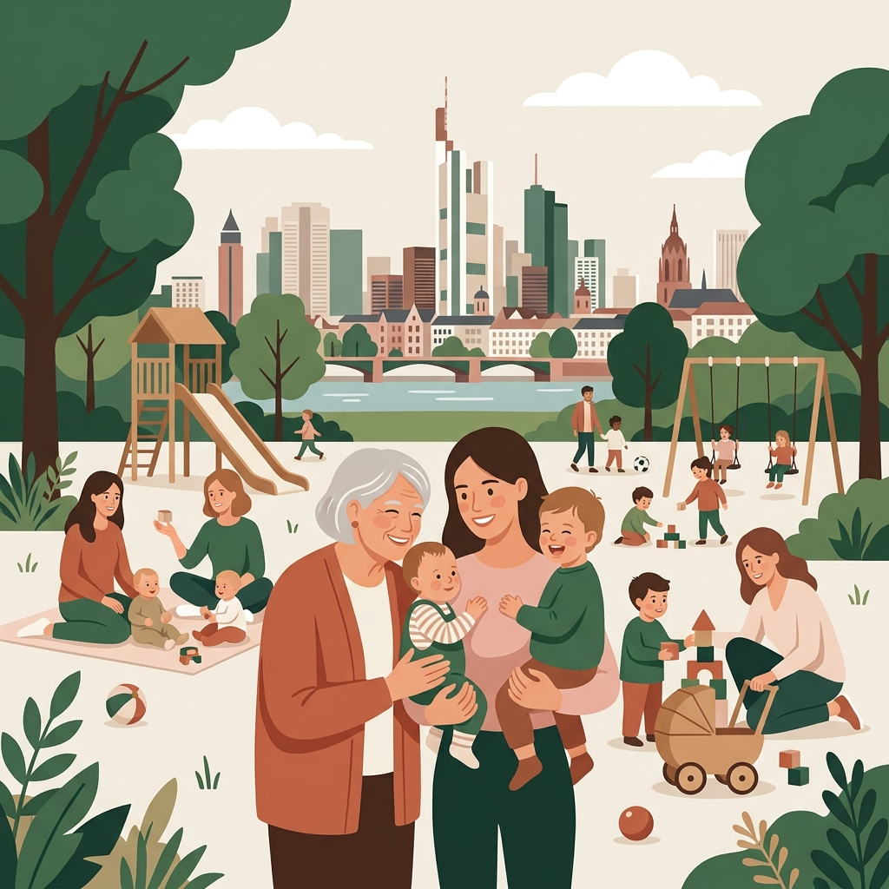

Unsere Vision
Zusammenhalten statt allein wuppen.

Frankfurt hat Tempo, Skyline und tausend Möglichkeiten. Aber seien wir ehrlich: Zwischen Job, Kita, Wickeltisch und dem ganz normalen Alltagstrubel leben viele von uns eher nebeneinander als miteinander.
Wir finden: Familie in der Großstadt muss sich nicht anonym anfühlen. Und vor allem muss niemand alles allein organisieren.
Mainhattan Mamas bringt das Dorf in die Mainmetropole.
Wir sind kein bürokratischer Verein und kein Pflichtprogramm. Wir sind eine wachsende Community von Frauen und Engagierten in Frankfurt, die zusammenkommen, zusammenhalten, Erfahrungen austauschen und die Wege im Viertel kürzer machen.
Das Prinzip:
Null Druck. Null Zeitraub.
Wir wissen genau, wie voll dein Alltag ist. Bei uns gibt es keine Verpflichtungen, keine endlosen Sitzungen und keine heile Welt, die man vorspielen muss.
Du nimmst dir, was dir guttut
Ein unkompliziertes Treffen bei der Spielzeit, ein ehrlicher Rat zum Betreuungsplatz oder einfach der Austausch mit Frauen, die im selben Boot sitzen.
Du gibst, wenn es für dich passt
Wenn du Zeit oder Lust hast, bringst du dich ein – mit einem Tipp, einer gebackenen Kleinigkeit fürs Wochenbett oder deinem beruflichen Know-how. Wenn nicht, ist das genauso okay.
Miteinander auf Augenhöhe
Kein Schicki-Micki, kein Vergleichen, keine Belehrung. Du kommst so, wie dein Tag gerade ist.
Miteinander im Viertel
Gemeinschaft entsteht nicht im Internet, sondern an der Haustür, im Park und im Stadtteil. Wir bringen Frauen zusammen, die sonst vielleicht aneinander vorbeigelaufen wären:
Schwangere und Neu-Mamas, die unkomplizierten Anschluss suchen und schon vor der Geburt ihr Netzwerk knüpfen wollen.
Mütter mit älteren Kindern, die den Alltag managen und verlässliche Kontakte für Kita, Schule und Freizeit schätzen.
Frauen mit Talenten und Fachwissen, die ihr Können aus Beruf und Leben unkompliziert teilen – von Finanzen über Gesundheit bis Erziehung.
Erfahrene Frauen und Nachbarinnen, die mit ihrer Ruhe, Zeit und Lebenserfahrung das Miteinander bereichern.
Wir fangen gerade an. Und du kannst von Tag 1 dabei sein.
Mainhattan Mamas ist keine fertige Bühne.
Wir bauen dieses Netzwerk Schritt für Schritt gemeinsam auf – direkt in den Frankfurter Stadtteilen. Du musst nichts vorbereiten, nichts unterschreiben und keine Erwartungen erfüllen.
Schau einfach vorbei, sag Hallo und mach Frankfurt mit uns ein Stück verbundener.